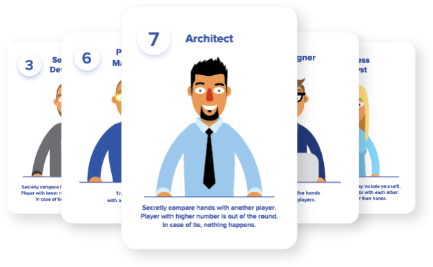
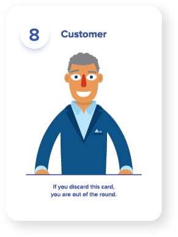

YOUR IT TEAM
wants to try and get the Customer to accept a proposal.
YOUR GOAL
is to collect Tokens of Success, get in the Customer's favor, and be the one to present the proposal.
RULES
- Draw cards from deck in turns clockwise and play their effects.
- At the end of each round, player with the biggest card number gets a Token of Success.
- Player with the needed amount of the Tokens of Success wins the game.
LET'S GET THE GAME STARTED!
PREPARATION
- Assemble the deck (16/32 cards). Shuffle the deck and put it face down.
- 2–4 players (16 cards)
- Recruiter (5)
- HR (2)
- Customer (1)
- Information Developer (2)
- Software Developer (2)
- Project Manager (1)
- Account Manager (1)
- Team Leader (2)
- 5–8 players (+16 cards)
- CEO (1)
- Trainee (1)
- Architect (1)
- Recruiter (3)
- R&D Engineer (1)
- Business Analyst (2)
- UX Designer (2)
- QA Engineer (2
- DevOps Engineer (2)
- System Administrator (1)
- Take 1 card from the deck and put it aside without looking at it. In case of 2 players, put aside 3 more cards face up. They will not be used during this round, but are available for all players to examine during the game.
ROUND 1
- Each player draws 1 card from the deck and looks at it. This card is your hand – keep it hidden from other players.
- You as the first player draw 1 more card from the deck. Now, you have 2 hands – examine their effects.
- Discard 1 of 2 hands face up in front of you. Play this card's effect, even if it's bad for you.
-
Player to your left draws a card from the deck, and then discards 1 of their 2 hands, just like you did. And then, the next
player to the left, and so on.
KNOCKED OUT – if you are knocked out of the round, discard your hand face up without playing its effect. Take no more turns till the end of the round. Effects related to being knocked out still apply (collecting a Token of Success for System Administrator or R&D).
- Round ends when the deck is gone, or when all players except one are out of the round.
- All players reveal their hands. Hand with the biggest number wins the round and gets a Token of Success.
= chance to talk to the Customer.
NEXT ROUNDS
- Shuffle all cards and start a new round. Winner of the previous round starts the new round (because they are in favor of the Customer right now).
- Continue playing rounds till a player wins.
SO WHO WINS?
Winner is the one who talked to the Customer the most (collected the needed amount of the Tokens of Success). The needed amount depends on how many players there are:
7tokens in the game of 2 players
5tokens in the game of 3 players
4tokens in the game of 4–8 players
TIE – at the end of the game, a tie may occur. E.g., Bob and Susan each have 3 Tokens of Success. They should play another round to break the tie.
Got the needed number of Tokens? Congrats – you are the one who gets to present the proposal to the Customer!
GET OUT THERE AND BECOME A PRO!
ABOUT CARDS & EFFECTS
8 – Customer
If you discard the Customer – no matter how or why – the proposal is tossed into the rubbish bin. You are immediately knocked out of the round.
7 – Account Manager
If you have this card + Project Manager or Team Leader in your hand, you must discard the Account Manager. You do not need to reveal that you have Project Manager or Team Leader. Actually, you can discard Account Manager even if you do not have those cards. Account Manager likes to play mind games...
6 – Project Manager
Discard the PM, and then exchange your other hand with another player. If you're lucky, you'll get a better hand. That's the end of your turn – don't play the effect of your new hand just yet.
5 – Team Leader
You can take away the power of any player's hand! The player who you choose (this can also be you) must discard their hand without playing its effect. If all other players are out or protected by the HR effect, you must choose yourself. The player who discarded their hand draws a new card. If the deck is empty, draw the card that was put aside at the start of the round.
4 – HR
Your superpower is immunity. When you discard the HR, you can ignore the effects of other player's hands until the start of your next turn. E.g., you don’t need to discard your hand when another player chooses you as a part of the Team Leader effect. If you and the Team Leader are the only players left, then the Team Leader must discard their own card.
3 – Software Developer
You have a chance to knock out your competitors! Choose another player and secretly compare hands. The player with the lower number is knocked out of the round. In case of a tie (both hands have the same number), nothing happens.
2 – Information Developer
InfoDevs dig up all kinds of information. When you discard the InfoDev, you can look at another player's hand. You do not need to reveal it to anyone – keep it a secret and use it to your advantage.
1 – Recruiter
When you discard the Recruiter, choose a player and name a number other than 1. If the player's hand has that number, the player is knocked out of the round. However, there's a catch: if you choose a Trainee, no matter what number you name (even 0), you are knocked out of the round.
THE CARDS BELOW ARE USED ONLY IN THE GAME OF 5–8 PLAYERS
9 – CEO
Choose a player and name a number other than 1. If the player's hand has that number, you get a Token of Success. If you guess right, the player may discard their card without playing its effect and draw a new card (with the exception of Customer). At the end of the round, when players compare hand numbers, CEO loses to the Customer despite the impressive number 9.
7 – Architect
When you discard the Architect, choose another player and secretly compare hands. The player with the higher number is knocked out of the round. Yep, even though your number is lower, you are more important to the team. In case of a tie, nothing happens.
6 – System Administrator
The Admin is a somewhat unusual card – its effect applies when you are knocked out of the round with this card in your discard pile. Means your hardware is in order. Go ahead and claim a Token of Success!
5 – DevOps Engineer
This card is your secret advantage at the end of the round. When players compare hand numbers, DevOps in your discard pile increases your hand number by 1. This stacks: if you have 2 DevOps in your discard pile, increase your hand number by 2.
4 – QA Engineer
This is a card with an effect like none other! When you discard the QA, name another player (or yourself). If the next card that is played (e.g., Recruiter) has an effect to choose one or more players, then the named player (or yourself) must be chosen during this effect. If all other players are out or protected by the HR effect, you must choose yourself.
3 – UX Designer
You get an insight into your team like no other player. When you discard the Designer, you can look at the hands of 1 or 2 other players. Keep this information secret and use it to your advantage!
2 – Business Analyst
When you discard the BA, choose 2 players (you may include yourself), and they will switch hands. After that, you can look at 1 of those hands without revealing it to other players. If less than 2 players can be chosen (e.g., all other players are protected by the HR effect), simply discard this hand.
0 – R&D Engineer
Prediction is definitely among your strong points! When you discard the R&D Engineer, choose another player – ideally, the one you believe is likely to win the round. Give the R&D token to that player, so that everyone remembers your choice. If the chosen player wins the round, you gain a Token of Success.
0 – Trainee
You are a real dark horse in the game! If another player chooses you when playing a Recruiter, no matter what number that player names (even 0), the Recruiter’s player is knocked out of the round. Now, all players know your hand, so discard it and draw a new card. If the deck is empty, draw the card that was put aside at the start of the round.